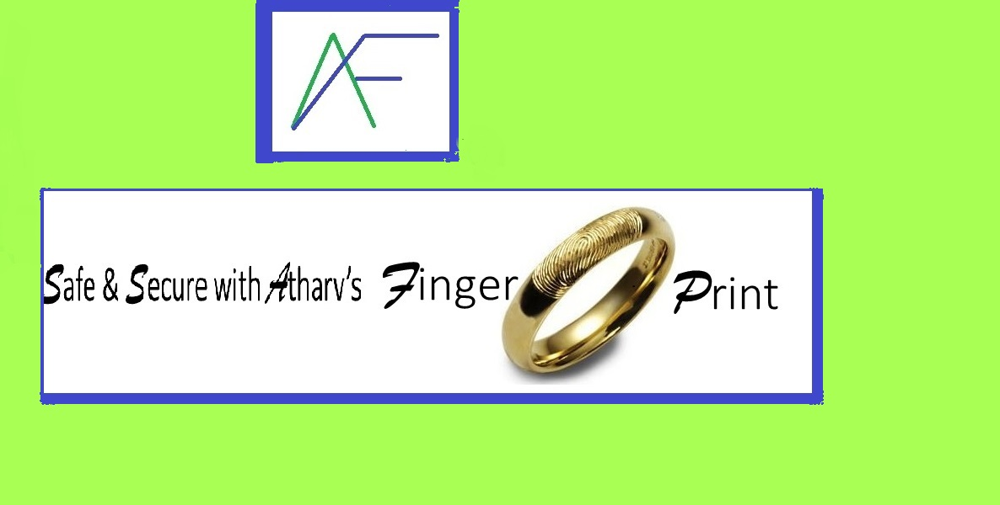

Atharv's

Vision :Digitally 'breath safe' anytime and everytime 'on'every person
Mission :Access,affordability and availability of'Be safe always'products

The idea: its inception
Safety isn’t expensive; it is priceless & safety doesn’t happen by accident.
The attacks on people especially the fairer sex is on the increase. Plenty
of research and brain racking has gone into why they are attacked and
one probable reason is that the victim did not have time to take out the
pepper spray or the mobile to dial for help. And hence the birth of the
vision for my company that I am going to build in future: ‘Digitally
‘Breathe safe’ anytime and every time on every person.
The seed of thought was planted, but how? Technology to the rescue of
course! A wearable technology! Gave a name to my company – my
signature style, and decided that this app would be named the ‘Signo
Safe’ app. This concept evolved in the wake of many rapes and murders
where the people do not have the time to make a call or alert the police.
The advantage:
It is wearable – can be attached to any finger-ring, locket, ear-ring,
watch or belt or any other accessory on the body.
All it needs is a finger -touch
How does it work?
The person can trigger safety signals by a light unobtrusive touch on the
app when in danger. The light touch triggers signals via geo-tracking/
GPS to the nearby six police stations. The nearest police station sends the
rescue team. There is a continuous monitoring of the rescue mission until
the ‘person safe’ alert is given by the police. The app allows other police
stations to track the rescue mission and send additional help if required.
Challenges:
The challenges are many
A digital code to register each app: similar to the Aadhar card to be
made
The geo-tracking /GPS tracking is still an unused technology
A protype has to be built and tested upon.
The design challenge looms large: wire framing, user friendly etc.
The pitfalls:
People /children might use it just to test it or have fun
Different scenarios: other options:
Safety doesn’t end with just preventing a rape or murder. There are many
other hazards that people face. In tune with my vision-to make possible
’breathe safe’ anytime and every time on every person, I am also
planning different tentacles of the ‘Signo Safe’ app.
Today, the pandemic has forced us to delve into other options. I
am exploring the idea of linking this to the ‘Arogya Sethu’ app and
a person who wears this app and comes into contact with a Covid
positive person, it beeps with a red light continuously and with an
‘at risk’ person, it beeps with a blue light.
Another possibility is that of use to mountain trekkers and forest
adventurers. The app can trigger alarms within a 1KM radius of a
wild animals.
This app could also be a boon for our army/air force/ naval base.
Looking Ahead- Other options:
I am also brainstorming the idea of the ‘Signo safe’ app working on Voice
commands
All the above needs Einstein’s brain but I am sure I will more or less
make it there; just needs thought, time and planning and implementationand of course the support of family and the White Hat team.
Be safe always-Safe and Secure with Atharv's 'Fingerprint'
Atharv Feroze,The Above is my dream for the company i plan to build